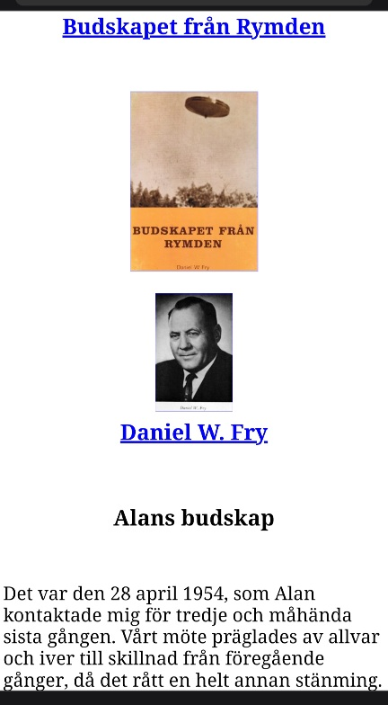

Kärnvapenepoken: data, berättelser och historisk markör
Hur samma teknologiska genombrott gav upphov till moraliska berättelser, empiriska mönster och kosmisk reflektion – utan att dessa språk får blandas samman.
Denna sida rör sig mellan historia, berättelser och modern forskning. Delarna är avsiktligt åtskilda.
Inledning
Denna text behandlar kärnvapenepoken som ett historiskt skede där flera sätt att tala om anomala fenomen och mänskliga erfarenheter uppstår samtidigt, men på tydligt åtskilda nivåer. I personliga närkontaktsredogörelser och samtida vittnesmål från 1900-talets mitt framträder kärnvapen ofta som moraliska symboler – uttryck för mänsklig oro, ansvar och existentiell osäkerhet inför nyvunnen destruktiv kapacitet. I observationsbaserad forskning förekommer samma teknologi i ett annat register: som en tidsmässig referenspunkt i empiriska data, där vissa anomalier sammanfaller med perioder av intensiv kärnteknologisk aktivitet, utan att detta i sig utgör en förklaring.
Textens kärna är att dessa uttryck inte får blandas samman, men heller inte ignoreras, eftersom de uppträder i samma historiska epok. Kärnvapenteknologin fungerar här som en historisk markör där mänskliga tolkningar och observationsdata samexisterar, utan att reduceras till en gemensam mening.
Nedan visas det första kärnvapentestet i White Sands, USA, den 16 juli 1945. Händelsen används i forskning som en tydlig tidsmässig referenspunkt i analyser av teknologiska epoker och observationsdata.

”Sidan gör inga påståenden om tolkning – endast om sammanhang.”
Närkontaktsredogörelsernas språk
I denna text behandlas närkontaktsredogörelser om upplevda händelser som historiskt material, eftersom de i dagsläget inte kan behandlas som data. Detta beror på att det ännu saknas vedertagna metoder för att verifiera eller statistiskt pröva de upplevelser som beskrivs.
Närkontaktsredogörelsernas språk I många närkontaktsredogörelser beskrivs hur individer upplever att de får se bilder eller sekvenser av framtida förstörelse – ofta kopplade till kärnvapen, radioaktiv ödeläggelse eller en obeboelig jord. Dessa syner fungerar inte som observationer i vetenskaplig mening, utan som ett återkommande narrativt mönster där förstörelseteknik som kärnteknologin blir bärare av mänsklig oro, skuld och ansvar. I många närkontaktsredogörelser beskrivs hur individer upplever att de får se bilder eller sekvenser av framtida förstörelse – ofta kopplade till kärnvapen, radioaktiv ödeläggelse eller en obeboelig jord. Dessa syner fungerar inte som observationer i vetenskaplig mening, utan som ett återkommande narrativt mönster där kärnteknologin blir bärare av mänsklig oro, skuld och ansvar.
Dessa erfarenheter har inte uppstått i ett tomrum. De har formulerats i en historisk kontext präglad av djupa teknologiska skiften, där individers möten med nya och svårbegripliga fenomen utan vedertagen förklaring sammanföll med en samtid präglad av existentiell osäkerhet. För att förstå deras roll behöver de därför läsas både i relation till sin tid och utifrån hur de upplevdes av dem som berördes.
På individnivå beskrivs dessa upplevelser dock inte som tolkningar eller efterhandsreflektioner. I närkontaktsredogörelser beskrivs de bilder och intryck som förmedlas inte som egna konstruktioner, utan som spontana upplevelser som, enligt de berörda, mottogs i samband med mötet med fenomenet. Flera vittnesmål betonar att upplevelserna var oväntade, oönskade och inte föregångna av något intresse eller engagemang i frågorna. De som beskriver dem uppger sig inte ha sökt rollen, utan att de oförberett drogs in i ett förmedlande sammanhang – i flera fall ofrivilligt i en roll som bärare av innehåll riktat bortom den egna personen, snarare än som ett uttryck för egen tolkning eller bearbetning.
Mot denna bakgrund kan enskilda närkontaktsredogörelser förstås som uttryck för sin tid. Daniel W. Frys utsagor används här inte som personliga vittnesmål, utan som ett illustrativt exempel på hur sådana redogörelser tog form i direkt anslutning till kärnvapen- och raketteknologiska testmiljöer, särskilt kring White Sands under 1950-talet. I sina redogörelser beskrev Fry att han upplevde kontakt med ett icke-mänskligt fenomen, vilket enligt honom själv förmedlade bilder och information rörande mänsklig teknik, dess konsekvenser och framtida risker. Dessa upplevelser återgavs som mottagna snarare än egenkonstruerade och presenterades av Fry som faktiska erfarenheter, inte som symboliska tolkningar eller metaforer.
Metodnot: Frågor om förändringar, tillägg eller möjliga motsägelser i Daniel W. Frys senare redogörelser behandlas inte här. Sådana bedömningar kräver andra analysramar än de som används på denna sida.
Nedanstående bildmaterial fungerar som tids- och miljöreferens för denna period.

”Faran för ert släktes totala undergång genom förstörelsemedel, som det själv framskapat, är nu ständigt överhängande. Hur kan då ett folk vara hotat av sina egna verk? Orsaken är helt enkelt den, att människorna inte gjort tillräckligt stora framsteg på det andliga och sociala området för att kunna avgöra, hur den materiella produktionen bäst skall kunna utnyttjas.”
”De flesta av ert släkte som verkligen tänker, är klart medvetna om den fara, som ligger i bruket av kärnvapen. Men man inser vanligen inte, att problemet också har en annan sida. Faktum är emellertid, att såvida inte enighet mellan era nationer uppnås, kommer slutligen själva det förhållandet, att sådana vapen finns – även om de aldrig kommer till användning – att medföra den nuvarande civilisationens totala sammanbrott.”
Exempel på mottaget budskapsinnehåll enligt Daniel W. Frys redogörelser (historiskt källmaterial, ej verifierbart underlag): gratisenergi.se/alanbud.htm